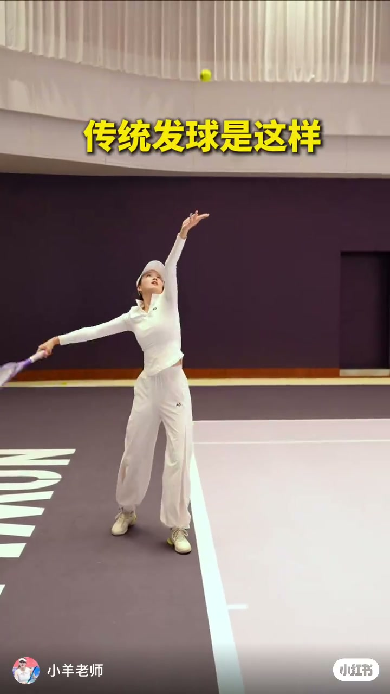
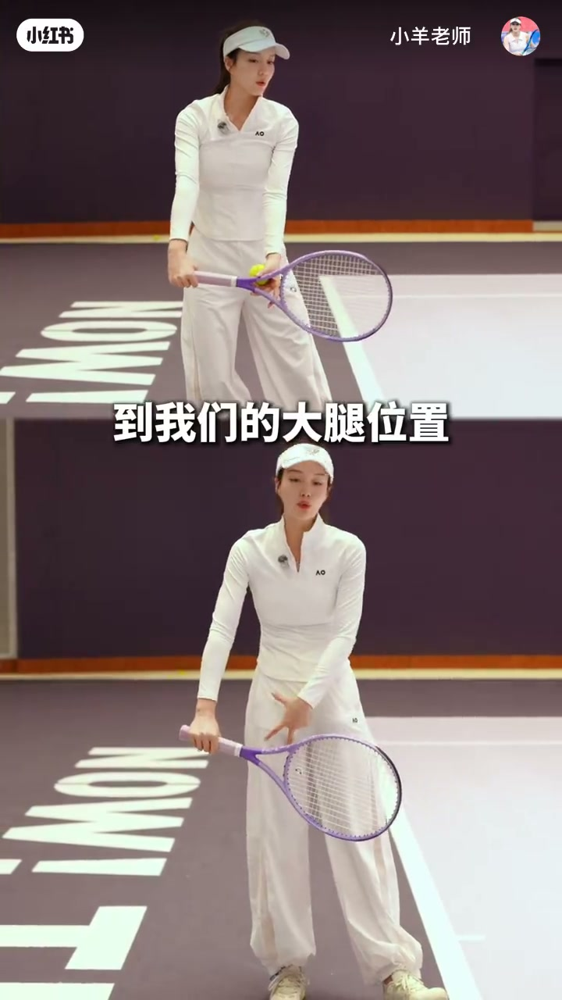
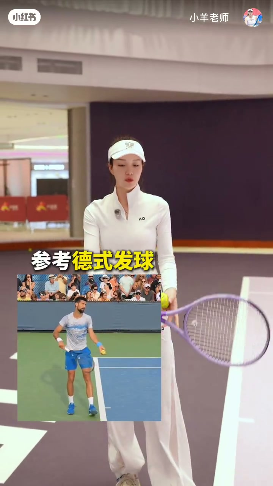
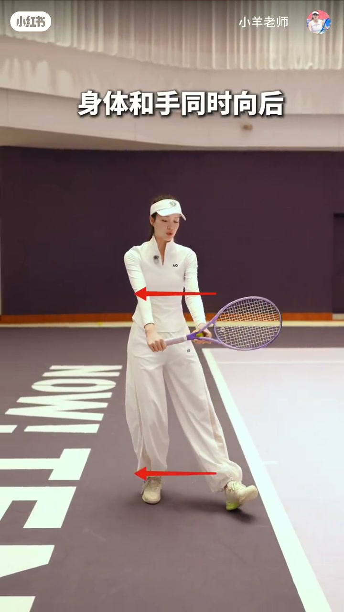
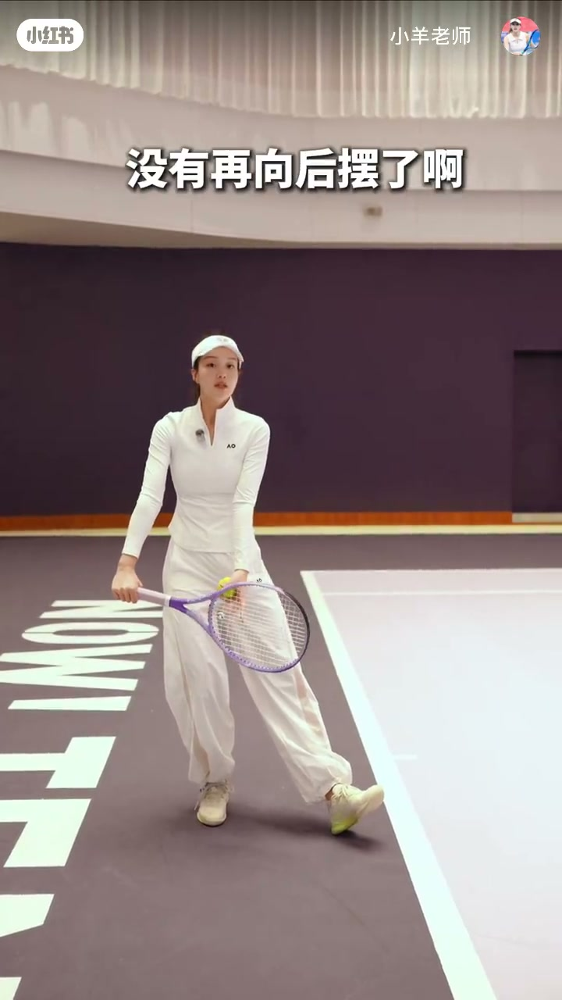
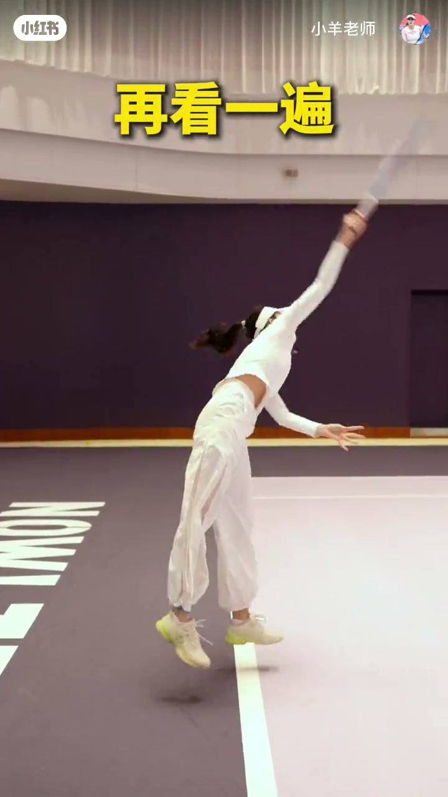

内容要点
「小羊老师」用约 77 秒把传统发球与现代式发球的引拍差异钉在画面上。Whisper 只抓到三句繁体碎片（传统发球是这样 / 一开始 / 举起来），完整论证主要靠屏幕字幕与动作示范：先亮传统奖杯位，再讲简约化与德式参考，最后演示「身体和手同时向后、不再大幅后摆」并把三步连起来。
知识结构
开场叠字「传统发球是这样」，左手上举、拍在脑后；随后讲传统式引拍可简约到大腿前就结束。
切入「现代式的发球」，提示拍头位置，并叠「参考德式发球」画中画；强调上手层面与前两个步骤。
准备阶段后，重心在后时身体与手同时向后；关键点是「没有再向后摆」——拍停身前，再把三步连起来并「再看一遍」。
现代式发球的对照轴是引拍幅度：相对传统奖杯位大环，片中主张重心后移时手脚同向后移，拍头不必再大幅向后摆，可对照德式发球准备动作自检。
00:00-00:22传统发球：奖杯位与引拍终点
视频一开场就把对照物钉死：黄字「传统发球是这样」，小羊老师做出经典奖杯位——左手托球上举，持拍手把球拍送到脑后。Whisper 在此段识别到「传统发球是这样」，与画面字幕一致。随后她转入讲解：传统式引拍可以「简约化」，拍头落到大腿前就「在这就已经结束了」。意思是：即便谈传统路径，也先看清引拍到底停在哪里，而不是只记「举起来」。


00:22-00:50现代式发球：参考德式
中段字幕转入「现代式的发球呢」，并出现「让我们的拍头有个」「最大程度的去」等口播碎片，强调拍头位置要被看见、被控制。约 43 秒叠黄字「参考德式发球」，左下嵌入职业球员发球准备的画中画（画面人物外观接近德约科维奇一类站位示范，视频未口头点名）。作者观点是：这一点可以拿德式发球当参照，而不是要求观众复刻职业完整动力链。随后字幕「前两个步骤」，为后文「把三个步骤连起来」埋线。

00:50-01:17准备—后移—连贯：不再大幅后摆
「准备的阶段」里她拍球、持拍落下；接着字幕「重心在后的时候呢」「身体和手同时向后」，画面用箭头标出身体与持拍手一并后移。紧接着的关键句是「没有再向后摆了啊」——拍头停在身前大腿高度，明确反对传统式那种继续向后抡环的大摆。收束字幕「把三个步骤连起来」，背对镜头连贯演示，并以黄字「再看一遍」结束。视频未给出抛球高度、站位脚距或拍头速度等数值标准；边界是业余对照示范，不是完整生物力学课。



详细文字转录
Whisper medium 仅识别到 3 段非空口播（繁体碎片，时间戳跨度很大）；其余要点来自画面字幕与动作。以下按原始分段呈现，并附简体释义。
-
傳統發球是這樣 （简：传统发球是这样）
-
一開始 （简：一开始）
-
舉起來 （简：举起来）